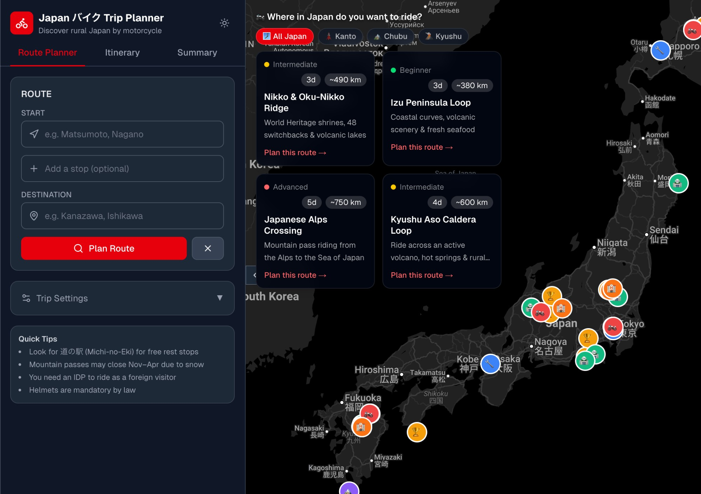

Japan Bike
Trip Planner
Idea to working MVP in a single weekend — my first proper vibe-coding sprint with Claude Code, and a lesson in what AI coding can (and can't) guarantee.

The What
A full-stack web app for planning multi-day motorcycle trips through rural Japan. It combines Google Maps route planning with Claude-powered itinerary generation — letting riders plot a route, set waypoints, and receive a detailed day-by-day plan tailored to biker-friendly stops, scenic roads, and practical logistics.
Key features include draggable waypoints, automatic rest-stop suggestions every ~2 hours, a fuel and toll cost calculator, and four pre-built routes (Nikko Ridge, Izu Peninsula, Japanese Alps, Kyushu Aso Caldera). State persists across sessions via Zustand and localStorage.
How It Was Built
After my experience using ChatGPT on the Tender Webscraper, I wanted to push further. This project was built entirely with Claude Code over a single weekend — going from a rough idea to a working Next.js app with TypeScript, Google Maps integration, and live Claude API calls.
Where the scraper had been slow and iterative, this was fast and conversational. I described features in plain English, and Claude Code scaffolded the components, handled the API wiring, and suggested architectural patterns I wouldn't have known to use. The speed was genuinely exciting — it felt like having a senior engineer on call.
But shipping something this fast also raised real questions. Without deep TypeScript or Next.js knowledge, I couldn't fully audit what was generated. Were there security gaps in the API routes? Edge cases in the state management? I trusted the output, but I was aware of how much I was trusting.
The Why
Planning a motorcycle trip through rural Japan involves more moving parts than a typical travel itinerary: road surfaces, fuel stop gaps on mountain passes, biker-friendly guesthouses, seasonal closures. Generic travel planners don't understand these constraints — and asking an AI for recommendations without grounding it in real route data produces generic advice.
This project was an excuse to explore what happens when you connect Claude's reasoning to structured geographical data. Rather than asking "recommend things near Nikko," the app passes the actual route geometry and asks Claude to reason about it — producing suggestions that are spatially coherent, not just topically related.
What I Learned
-
AI coding is fast but not free. Claude Code got me to a working app in two days. But the time I saved on writing code, I owe back on understanding it. Shipping responsibly means learning to read and audit what's generated, not just trusting that it works.
-
Grounding AI in real data changes the quality ceiling. Claude with a route geometry and a curated biker POI dataset produced recommendations that were genuinely useful. The same prompts without that context produced plausible-sounding but spatially incoherent suggestions. Context is the product.
-
A weekend MVP reveals what a month of planning hides. By shipping fast, I learned immediately which features users actually cared about (the pre-built routes) and which they ignored (the custom itinerary editor). Speed of feedback beats depth of specification.